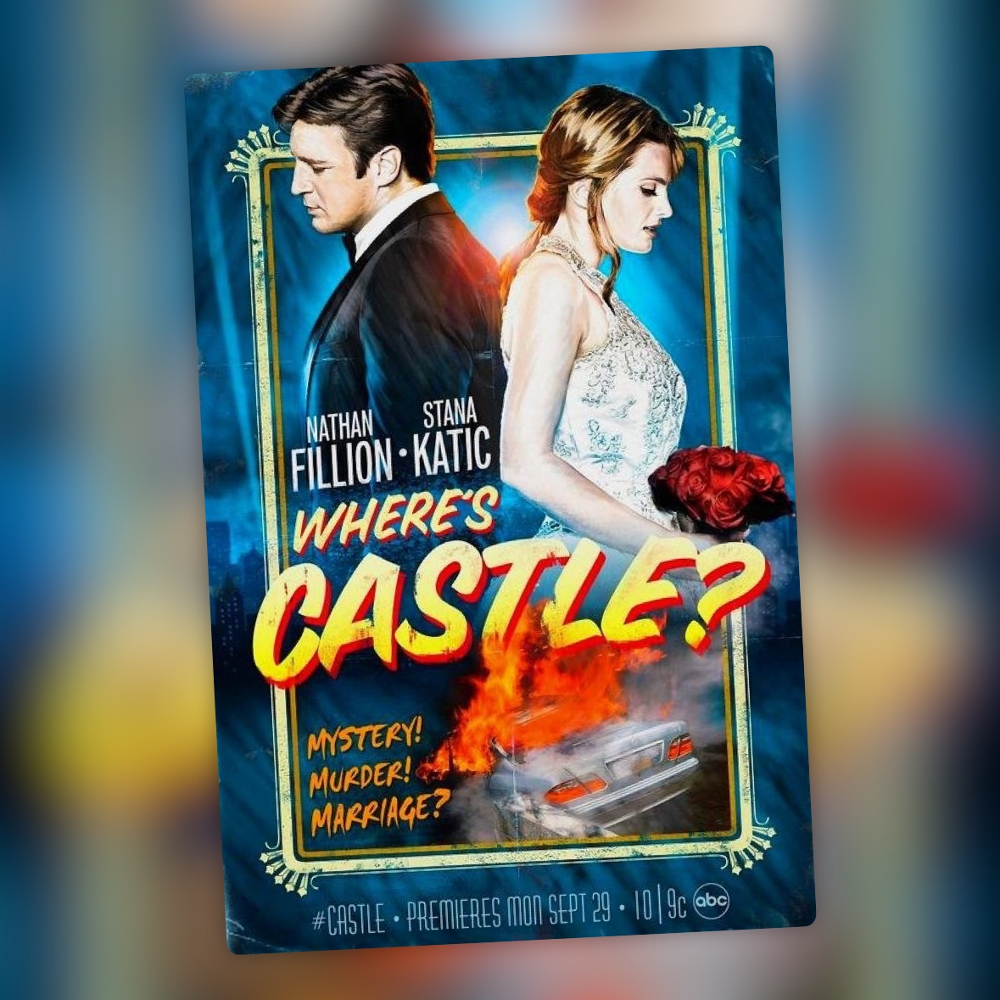

Castle (2009-2016)
Dos protagonistas con chispa y unos secundarios que se llevan media serie

He terminado la revisión de Castle, y qué estupenda serie fue. Una mezcla de comedia, misterio y química entre personajes que hacía que cada capítulo se disfrutara como el primero.
Ha sido un placer volver a verla desde el principio. Los casos entretienen, tienen ese punto de misterio de la semana que hace que siempre quieras saber quién ha sido, pero en realidad nunca han sido lo más importante para mí. Lo que hace que Castle funcione es todo lo que ocurre alrededor de ellos.
Castle y Beckett son el corazón de la serie. Nathan Fillion y Stana Katic tienen muchísima chispa juntos y buena parte de la gracia está en ver cómo pasan de no soportarse demasiado a convertirse en una pareja que funciona tanto cuando están investigando un asesinato como cuando simplemente están discutiendo por cualquier tontería. La serie juega mucho con esa tensión entre los dos y sabe sacarle partido durante temporadas.
Pero, siendo sinceros, gran parte del encanto viene de los secundarios. Ryan, Esposito, Lanie, Martha, Alexis... Hay personajes que podrían haberse quedado perfectamente en un segundo plano y que terminan teniendo una personalidad y unas relaciones propias que hacen que quieras seguir viéndolos. Incluso cuando el caso de turno es más flojo, siempre queda algo que funciona entre ellos.
Y eso es lo que más he disfrutado al volver a verla. Castle consigue que la comisaría se sienta como un grupo de personajes al que ya conoces. Ryan y Esposito tienen su propia dinámica, Lanie y Beckett tienen una relación que va mucho más allá del trabajo, y la familia de Castle aporta otra parte de la serie cuando salimos de la comisaría.
También ayuda que la serie nunca se tome demasiado en serio. Hay casos bastante disparatados, situaciones que rozan lo absurdo y capítulos que saben perfectamente que estás ahí para pasar un buen rato. Castle no necesita reinventar el género policial. Le basta con tener personajes con los que da gusto estar.
Eso sí, las ocho temporadas se hacen notar y la serie no mantiene siempre el mismo nivel. Hay un momento en el que la relación entre Castle y Beckett deja de tener la misma frescura y algunas decisiones empiezan a sentirse más como una forma de alargar la historia que como algo que realmente necesitaban estos personajes. La parte final es la que me impide subirle la nota.
Es una pena, porque durante muchos años Castle fue exactamente el tipo de serie que me apetecía ver. Divertida, ligera cuando tenía que serlo, con buenos casos y, sobre todo, con unos personajes a los que acabas cogiendo cariño.
Castle deja huella. Después de tantos años, volver a ella me ha recordado por qué me gustaba tanto.
Ficha técnica
- Título original: Castle
- Creada por: Andrew W. Marlowe
- Reparto principal: Nathan Fillion, Stana Katic, Jon Huertas, Seamus Dever, Tamala Jones, Molly C. Quinn, Susan Sullivan
- Temporadas: 8 (173 episodios, 2009-2016)
- Plataforma(s) actual(es) en España: Disney+